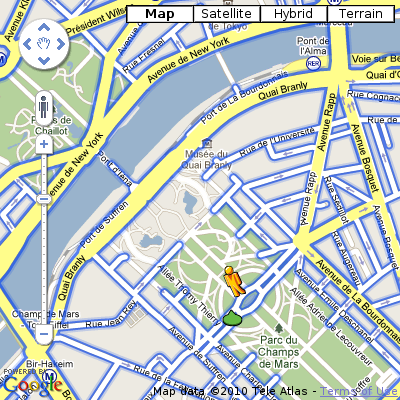
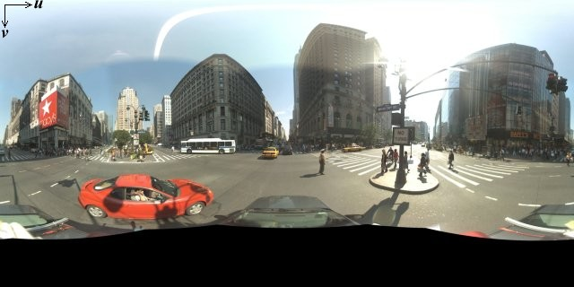
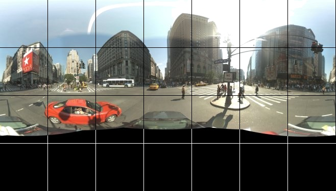

©2010 Google -
Code Home -
Terms of Service -
Privacy Policy -
Site Directory
Google Code offered in:
English -
Español -
日本語 -
한국어 -
Português -
Pусский -
中文(简体) -
中文(繁體)
Maps Javascript API V3
- Home Page
- API Reference
Code Samples:
More Resources:
Maps Javascript API V2
(Deprecated API)
Maps API for Flash
Maps Data API
(Deprecated API)
Static Maps API
Earth API
Local Search API
(Deprecated API)
Same great maps plus a SLA, support, and control over ads
Google Maps Javascript API V3 Services
Note: The Google Maps Javascript API Version 3 documented within these pages is now the official Javascript API. Version 2 of this API has been officially deprecated as per our deprecation policy. We encourage you to migrate your code to this newly updated and enhanced version!
Geocoding
Geocoding is the process of converting addresses (like "1600 Amphitheatre Parkway, Mountain View, CA") into geographic coordinates (like latitude 37.423021 and longitude -122.083739), which you can use to place markers or position the map.
The Google Maps API provides a geocoder class for geocoding addresses dynamically from user input. These requests are rate-limited to discourage abuse of the service. If instead, you wish to geocode static, known addresses, see the Geocoding API documentation.
Geocoding Requests
Accessing the Geocoding service is asynchronous, since the Google Maps API needs to make a call to an external server. For that reason, you need to pass a callback method to execute upon completion of the request. This callback method processes the result(s). Note that the geocoder may return more than one result.
You access the Google Maps API geocoding service within your code via the
google.maps.Geocoder object. The Geocoder.geocode() method
initiates a request to the geocoding service, passing it a GeocodeRequest
object literal containing the input terms and a callback method to execute upon receipt
of the response.
The GeocodeRequest object literal contains the
following fields:
{
address: string,
latLng: LatLng,
bounds: LatLngBounds,
language: string,
region: string,
}
These fields are explained below.
address(required*) — The address which you want to geocode.latLng(required*) — TheLatLngfor which you wish to obtain the closest, human-readable address.bounds(optional) — TheLatLngBoundswithin which to bias geocode results more prominently. (For more information see Viewport Biasing below.)language(optional) — The language in which to return results.region(optional) — The region code, specified as a IANA languageregionsubtag. In most cases, these tags map directly to familiar ccTLD ("top-level domain") two-character values. (For more information see Region Code Biasing below.)
* Note: You may pass either an address or a
latLng to lookup. (If you pass a latLng, the geocoder performs what is
known as a reverse geocode. See Reverse Geocoding for more
information.)
The bounds and region parameters will only influence, not fully
restrict, results from the geocoder.
Geocoding Responses
The Geocoding service requires a callback method to execute upon retrieval of the
geocoder's results. This callback should pass two parameters to hold the
results and a status code, in that order. Since the Geocoder
may return more than one entry, the GeocoderResults object literal
is an array.
Geocoding Results
The GeocoderResults object literal represents a single Geocoding
result and is an object of the following form:
results[]: {
types[]: string,
formatted_address: string,
address_components[]: {
short_name: string,
long_name: string,
types[]: string
},
geometry: {
location: LatLng,
location_type: GeocoderLocationType
viewport: LatLngBounds,
bounds: LatLngBounds
}
}
These fields are explained below:
types[]is an array indicating the type of the returned result. This array contains a set of one or more tags identifying the type of feature returned in the result. For example, a geocode of "Chicago" returns "locality" which indicates that "Chicago" is a city, and also returns "political" which indicates it is a political entity.formatted_addressis a string containing the human-readable address of this location. Often this address is equivalent to the "postal address," which sometimes differs from country to country. (Note that some countries, such as Great Britain, do not allow distribution of true postal addresses due to licensing restrictions.) This address is generally composed of one or more address components. For example, the address "111 8th Avenue, New York, NY" contains separate address components for "111 8th Avenue" (a street address), "New York" (the city) and "NY" (the US state). These address components are noted below. (For more information on types, see Types below.address_component[]is an array containing the separate address components, as explained above.geometrycontains the following information:locationcontains the geocoded latitude,longitude value. Note that we return this location as aLatLngobject, not as a formatted string.location_typestores additional data about the specified location. The following values are currently supported:google.maps.GeocoderLocationType.ROOFTOPindicates that the returned result reflects a precise geocode.google.maps.GeocoderLocationType.RANGE_INTERPOLATEDindicates that the returned result reflects an approximation (usually on a road) interpolated between two precise points (such as intersections). Interpolated results are generally returned when rooftop geocodes are unavailable for a street address.google.maps.GeocoderLocationType.GEOMETRIC_CENTERindicates that the returned result is the geometric center of a result such as a polyline (for example, a street) or polygon (region).google.maps.GeocoderLocationType.APPROXIMATEindicates that the returned result is approximate.
viewportstores the recommended viewport for the returned result.bounds(optionally returned) stores theLatLngBoundswhich can fully contain the returned result. Note that these bounds may not match the recommended viewport. (For example, San Francisco includes the Farallon islands, which are technically part of the city, but should not be returned in the viewport.)
Address Component Types
The types[] array within the returned result indicates the address type.
These types may also be returned within address_components[] arrays to indicate
the type of the particular address component. Addresses within the geocoder may have
multiple types; the types may be considered "tags". For example, many cities are tagged
with the political and locality type.
The following types are supported and returned by the HTTP Geocoder:
street_addressindicates a precise street address.routeindicates a named route (such as "US 101").intersectionindicates a major intersection, usually of two major roads.politicalindicates a political entity. Usually, this type indicates a polygon of some civil administration.countryindicates the national political entity, and is typically the highest order type returned by the Geocoder.administrative_area_level_1indicates a first-order civil entity below the country level. Within the United States, these administrative levels are states. Not all nations exhibit these administrative levels.administrative_area_level_2indicates a second-order civil entity below the country level. Within the United States, these administrative levels are counties. Not all nations exhibit these administrative levels.administrative_area_level_3indicates a third-order civil entity below the country level. This type indicates a minor civil division. Not all nations exhibit these administrative levels.colloquial_areaindicates a commonly-used alternative name for the entity.localityindicates an incorporated city or town political entity.sublocalityindicates an first-order civil entity below a localityneighborhoodindicates a named neighborhoodpremiseindicates a named location, usually a building or collection of buildings with a common namesubpremiseindicates a first-order entity below a named location, usually a singular building within a collection of buildings with a common namepostal_codeindicates a postal code as used to address postal mail within the country.natural_featureindicates a prominent natural feature.airportindicates an airport.parkindicates a named park.
In addition to the above, address components may exhibit the following types:
post_boxindicates a specific postal box.street_numberindicates the precise street number.floorindicates the floor of a building address.roomindicates the room of a building address.
Status Codes
The status code may return one of the following values:
google.maps.GeocoderStatus.OKindicates that the geocode was successful.google.maps.GeocoderStatus.ZERO_RESULTSindicates that the geocode was successful but returned no results. This may occur if the geocode was passed a non-existentaddressor alatngin a remote location.google.maps.GeocoderStatus.OVER_QUERY_LIMITindicates that you are over your quota.google.maps.GeocoderStatus.REQUEST_DENIEDindicates that your request was denied for some reason.google.maps.GeocoderStatus.INVALID_REQUESTgenerally indicates that the query (addressorlatLng) is missing.
In this example, we geocode an address and place a marker at the returned latitude and longitude values. Note that the handler is passed as an anonymous function literal.
var geocoder;
var map;
function initialize() {
geocoder = new google.maps.Geocoder();
var latlng = new google.maps.LatLng(-34.397, 150.644);
var myOptions = {
zoom: 8,
center: latlng,
mapTypeId: google.maps.MapTypeId.ROADMAP
}
map = new google.maps.Map(document.getElementById("map_canvas"), myOptions);
}
function codeAddress() {
var address = document.getElementById("address").value;
geocoder.geocode( { 'address': address}, function(results, status) {
if (status == google.maps.GeocoderStatus.OK) {
map.setCenter(results[0].geometry.location);
var marker = new google.maps.Marker({
map: map,
position: results[0].geometry.location
});
} else {
alert("Geocode was not successful for the following reason: " + status);
}
});
}
<body onload="initialize()">
<div id="map_canvas" style="width: 320px; height: 480px;"></div>
<div>
<input id="address" type="textbox" value="Sydney, NSW">
<input type="button" value="Encode" onclick="codeAddress()">
</div>
</body>
View example (geocoding-simple.html)
Reverse Geocoding (Address Lookup)
The term geocoding generally refers to translating a human-readable address into a location on a map. The process of doing the converse, translating a location on the map into a human-readable address, is known as reverse geocoding.
The Geocoder supports reverse geocoding directly. Instead of supplying
a textual address, supply a comma-separated latitude/longitude pair in the
latLng parameter.
The following example geocodes a latitude/longitude value and centers the map at that location, bringing up an info window with the formatted address. We return the second result, which is less specific than the first (in this case, a neighborhood name):
var geocoder;
var map;
var infowindow = new google.maps.InfoWindow();
var marker;
function initialize() {
geocoder = new google.maps.Geocoder();
var latlng = new google.maps.LatLng(40.730885,-73.997383);
var myOptions = {
zoom: 8,
center: latlng,
mapTypeId: google.maps.MapTypeId.ROADMAP
}
map = new google.maps.Map(document.getElementById("map_canvas"), myOptions);
}
function codeLatLng() {
var input = document.getElementById("latlng").value;
var latlngStr = input.split(",",2);
var lat = parseFloat(latlngStr[0]);
var lng = parseFloat(latlngStr[1]);
var latlng = new google.maps.LatLng(lat, lng);
geocoder.geocode({'latLng': latlng}, function(results, status) {
if (status == google.maps.GeocoderStatus.OK) {
if (results[1]) {
map.setZoom(11);
marker = new google.maps.Marker({
position: latlng,
map: map
});
infowindow.setContent(results[1].formatted_address);
infowindow.open(map, marker);
}
} else {
alert("Geocoder failed due to: " + status);
}
});
}
Note that in the previous example we showed the second result (by selecting
results[1]. The reverse geocoder often returns more than one result.
Geocoding "addresses" are not just postal addresses, but any way to geographically
name a location. For example, when geocoding a point in the city of Chicago, the
geocoded point may be labeled as a street address, as the city (Chicago), as
its state (Illinois) or as a country (The United States). All are addresses to
the geocoder. The reverse geocoder returns all of these results.
The reverse geocoder matches political entities (countries, provinces, cities and neighborhoods), street addresses, and postal codes.
The full list of addresses returned by the previous query are shown below.
results[0].formatted_address: "275-291 Bedford Ave, Brooklyn, NY 11211, USA", results[1].formatted_address: "Williamsburg, NY, USA", results[2].formatted_address: "New York 11211, USA", results[3].formatted_address: "Kings, New York, USA", results[4].formatted_address: "Brooklyn, New York, USA", results[5].formatted_address: "New York, New York, USA", results[6].formatted_address: "New York, USA", results[7].formatted_address: "United States"
Addresses are returned in the order of best to least matches. Generally,
the more exact address is the most prominent result, as it is in this case.
Note that we return different types of addresses, from the most specific
street address to less specific political entities such as neighborhoods,
cities, counties, states, etc. If you wish to match a more general address,
you may wish to inspect the results[].types field.
Note: Reverse geocoding is not an exact science. The geocoder will attempt to find the closest addressable location within a certain tolerance.
View example (geocoding-reverse.html)
Viewport Biasing
You can also instruct the Geocoding Service to prefer results within a given
viewport (expressed as a bounding box). You do so by setting the bounds
parameter within the GeocodeRequest object literal to define the bounds
of this viewport.
For example, a geocode for "Winnetka" generally returns this suburb of Chicago:
{
"types":["locality","political"],
"formatted_address":"Winnetka, IL, USA",
"address_components":[{
"long_name":"Winnetka",
"short_name":"Winnetka",
"types":["locality","political"]
},{
"long_name":"Illinois",
"short_name":"IL",
"types":["administrative_area_level_1","political"]
},{
"long_name":"United States",
"short_name":"US",
"types":["country","political"]
}],
"geometry":{
"location":[ -87.7417070, 42.1083080],
"location_type":"APPROXIMATE"
}
}
However, specifying a bounds parameter defining a bounding box for
the San Fernando Valley of Los Angeles results in this geocode returning the neighborhood
named "Winnetka" in that location:
{
"types":["sublocality","political"],
"formatted_address":"Winnetka, California, USA",
"address_components":[{
"long_name":"Winnetka",
"short_name":"Winnetka",
"types":["sublocality","political"]
},{
"long_name":"Los Angeles",
"short_name":"Los Angeles",
"types":["administrative_area_level_3","political"]
},{
"long_name":"Los Angeles",
"short_name":"Los Angeles",
"types":["administrative_area_level_2","political"]
},{
"long_name":"California",
"short_name":"CA",
"types":["administrative_area_level_1","political"]
},{
"long_name":"United States",
"short_name":"US",
"types":["country","political"]
}],
"geometry":{
"location": [34.213171,-118.571022],
"location_type":"APPROXIMATE"
}
}
Region Code Biasing
You can also set the Geocoding Service to return results biased to a
particular region explicitly using the region parameter. This
parameter takes a region code, specified as a
IANA
language region subtag. In most cases, these tags map directly
to familiar ccTLD ("top-level domain") two-character values such as "uk" in
"co.uk" for example. In some cases, the region tag also supports
ISO-3166-1 codes, which sometimes differ from ccTLD values ("GB" for "Great
Britain" for example).
Geocoding requests can be sent for every domain in which the main Google Maps application offers geocoding.
For example, a geocode for "Toledo" returns this result, as the default domain for the Geocoding Service is set to the United States:
{
"types":["locality","political"],
"formatted_address":"Toledo, OH, USA",
"address_components":[{
"long_name":"Toledo",
"short_name":"Toledo",
"types":["locality","political"]
},{
"long_name":"Ohio",
"short_name":"OH",
"types":["administrative_area_level_1","political"]
},{
"long_name":"United States",
"short_name":"US",
"types":["country","political"]
}]
}
A geocode for "Toledo" with the region field set to 'es' (Spain) will return the Spanish city:
{
"types":["locality","political"],
"formatted_address":"Toledo, España",
"address_components":[{
"long_name":"Toledo",
"short_name":"Toledo",
"types":["locality","political"]
},{
"long_name":"Toledo",
"short_name":"TO",
"types":["administrative_area_level_2","political"]
},{
"long_name":"Castilla-La Mancha",
"short_name":"CM",
"types":["administrative_area_level_1","political"]
},{
"long_name":"España",
"short_name":"ES",
"types":["country","political"]
}]
}
Directions
You can calculate directions (using a variety of methods
of transportation) by using the DirectionsService
object. This object communicates with the Google Maps API
Directions Service which receives direction requests and
returns computed results. You may either handle these
directions results yourself or use the
DirectionsRenderer object to render these
results.
Directions may specify origins and destinations either
as text strings (e.g. "Chicago, IL" or "Darwin, NSW,
Australia") or as LatLng values. The Directions
service can return multi-part directions using a series
of waypoints. Directions are displayed as a polyline drawing
the route on a map, or additionally as a series of textual
description within a <div> element (e.g.
"Turn right onto the Williamsburg Bridge ramp").
Directions Requests
Accessing the Directions service is asynchronous, since
the Google Maps API needs to make a call to an external
server. For that reason, you need to pass a callback
method to execute upon completion of the request. This
callback method should process the result(s). Note that the
Directions service may return more than one possible itinerary
as an array of separate routes[].
To use directions in V3, create an object of type
DirectionsService and call
DirectionsService.route() to initiate a request
to the Directions service, passing it a
DirectionsRequest object literal
containing the input terms and a callback method to execute
upon receipt of the response.
The DirectionsRequest object literal
contains the following fields:
{
origin: LatLng | String,
destination: LatLng | String,
travelMode: DirectionsTravelMode,
unitSystem: DirectionsUnitSystem,
waypoints[]: DirectionsWaypoint,
optimizeWaypoints: Boolean,
provideRouteAlternatives: Boolean,
avoidHighways: Boolean,
avoidTolls: Boolean
region: String
}
These fields are explained below:
origin(required) specifies the start location from which to calculate directions. This value may either be specified as aString(e.g. "Chicago, IL") or as aLatLngvalue.destination(required) specifies the end location to which to calculate directions. This value may either be specified as aString(e.g. "Chicago, IL") or as aLatLngvalue.travelMode(required) specifies what mode of transport to use when calculating directions. Valid values are specified in Travel Modes below.unitSystem(optional) specifies what unit system to use when displaying results. Valid values are specified in Unit Systems below.waypoints[](optional) specifies an array ofDirectionsWaypoints. Waypoints alter a route by routing it through the specified location(s). A waypoint is specified as an object literal with fields shown below:locationspecifies the location of the waypoint, either as aLatLngor as aStringwhich will be geocoded.stopoveris a boolean which indicates that the waypoint is a stop on the route, which has the effect of splitting the route into two routes.
(For more information on waypoints, see Using Waypoints in Routes below.)
optimizeWaypoints(optional) specifies that the route using the suppliedwaypointsmay be optimized to provide the shortest possible route. Iftrue, the Directions service will return the reorderedwaypointsin anwaypoint_orderfield.(For more information, see Using Waypoints in Routes below.)provideRouteAlternatives(optional) when set totruespecifies that the Directions service may provide more than one route alternative in the response. Note that providing route alternatives may increase the response time from the server.avoidHighways(optional) when set totrueindicates that the calculated route(s) should avoid major highways, if possible.avoidTolls(optional) when set totrueindicates that the calculated route(s) should avoid toll roads, if possible.region(optional) specifies the region code, specified as a ccTLD ("top-level domain") two-character value. (For more information see Region Biasing below.)
A sample DirectionsRequest is shown below:
{
origin: "Chicago, IL",
destination: "Los Angeles, CA",
waypoints: [
{
location:"Joplin, MO",
stopover:false
},{
location:"Oklahoma City, OK",
stopover:true
}],
provideRouteAlternatives: false,
travelMode: DirectionsTravelMode.DRIVING,
unitSystem: DirectionsUnitSystem.IMPERIAL
}
Travel Modes
When you calculate directions, you need to specify which transportation mode to use. The following travel modes are currently supported:
DirectionsTravelMode.DRIVINGindicates standard driving directions using the road network.DirectionsTravelMode.WALKINGrequests walking directions via pedestrian paths & sidewalks (where available).- New!
DirectionsTravelMode.BICYCLINGrequests bicycling directions via bicycle paths & preferred streets (currently only available in the US).
Note: Walking directions
may sometimes not include clear pedestrian paths, so walking
directions will return warnings in the
DirectionsResult which you must display if you
are not using the default DirectionsRenderer.
Unit Systems
By default, directions are calculated and displayed using
the unit system of the origin's country or region.
(Note: origins expressed using
latitude/longitude coordinates rather than addresses always default
to metric units.) For example, a route from
"Chicago, IL" to "Toronto, ONT" will display results in miles, while
the reverse route will display results in kilometers. You
may override this unit system by setting one explicitly within the
request using one of the following DirectionsUnitSystem
values:
DirectionsUnitSystem.METRICspecifies usage of the metric system. Distances are shown using kilometers.DirectionsUnitSystem.IMPERIALspecifies usage of the Imperial (English) system. Distances are shown using miles.
Note: this unit system setting only affects the text displayed to the user. The directions result also contains distance values, not shown to the user, which are always expressed in meters.
Region Biasing for Directions
The Google Maps API Directions Service returns address results influenced
by the domain (region or country) from which you loaded the JavaScript
bootstrap. (Since most users load http://maps.google.com/
this sets an implicit domain to the United States.) If you load the
bootstrap from a different supported domain, you will get results
influenced by that domain. For example, searches for "San Francisco" may
return different results from applications loading
http://maps.google.com/ (the United States) than one loading
http://maps.google.es/ (Spain).
You can also set the Directions service to return results biased to a
particular region using the region parameter. This parameter
takes a region code, specified as a
IANA
language region subtag. In most cases, these tags map
directly to ccTLD ("top-level domain") two-character values such as "uk" in
"co.uk" for example. In some cases, the region tag also supports
ISO-3166-1 codes, which sometimes differ from ccTLD values ("GB" for "Great
Britain" for example).
Consult the Google Maps coverage spreadsheet to determine to what extent a country supports directions.
Rendering Directions
Initiating a directions request to the
DirectionsService with the route() method
requires passing a callback which executes upon completion of the
service request. This callback will return a
DirectionsResult and a DirectionsStatus
code in the response.
Status of Directions Query
The DirectionsStatus may return the following
values:
OKindicates the response contains a validDirectionsResult.NOT_FOUNDindicates at least one of the locations specified in the requests's origin, destination, or waypoints could not be geocoded.ZERO_RESULTSindicates no route could be found between the origin and destination.MAX_WAYPOINTS_EXCEEDEDindicates that too manyDirectionsWaypoints were provided in theDirectionsRequest. The maximum allowed waypoints is 8, plus the origin, and destination. Maps API Premier customers are allowed 23 waypoints, plus the origin, and destination.INVALID_REQUESTindicates that the providedDirectionsRequestwas invalid.OVER_QUERY_LIMITindicates the webpage has sent too many requests within the allowed time period.REQUEST_DENIEDindicates the webpage is not allowed to use the directions service.UNKNOWN_ERRORindicates a directions request could not be processed due to a server error. The request may succeed if you try again.
You should ensure that the directions query returned valid results by checking this value before processing the result.
Displaying the DirectionsResult
The DirectionsResult contains the result of the
directions query, which you may either handle yourself, or pass
to a DirectionsRenderer object, which can
automatically handle displaying the result on a map.
To display a DirectionsResult using a
DirectionsRenderer, you simply need to do the
following:
- Create a
DirectionsRendererobject. - Call
setMap()on the renderer to bind it to the passed map. - Call
setDirections()on the renderer, passing it theDirectionsResultas noted above. Because the renderer is anMVCObject, it will automatically detect any changes to its properties and update the map when its associated directions have changed.
The following example calculates directions between
two locations on Route 66, where the origin and destination
are set by the given "start" and "end"
values in the dropdown lists. The DirectionsRenderer
handles display of the polyline between the indicated
locations, and the placement of markers at the origin,
destination, and any waypoints, if applicable.
var directionDisplay;
var directionsService = new google.maps.DirectionsService();
var map;
function initialize() {
directionsDisplay = new google.maps.DirectionsRenderer();
var chicago = new google.maps.LatLng(41.850033, -87.6500523);
var myOptions = {
zoom:7,
mapTypeId: google.maps.MapTypeId.ROADMAP,
center: chicago
}
map = new google.maps.Map(document.getElementById("map_canvas"), myOptions);
directionsDisplay.setMap(map);
}
function calcRoute() {
var start = document.getElementById("start").value;
var end = document.getElementById("end").value;
var request = {
origin:start,
destination:end,
travelMode: google.maps.DirectionsTravelMode.DRIVING
};
directionsService.route(request, function(result, status) {
if (status == google.maps.DirectionsStatus.OK) {
directionsDisplay.setDirections(result);
}
});
}
<div>
<b>Start: </b>
<select id="start" onchange="calcRoute();">
<option value="chicago, il">Chicago</option>
<option value="st louis, mo">St Louis</option>
<option value="joplin, mo">Joplin, MO</option>
<option value="oklahoma city, ok">Oklahoma City</option>
<option value="amarillo, tx">Amarillo</option>
<option value="gallup, nm">Gallup, NM</option>
<option value="flagstaff, az">Flagstaff, AZ</option>
<option value="winona, az">Winona</option>
<option value="kingman, az">Kingman</option>
<option value="barstow, ca">Barstow</option>
<option value="san bernardino, ca">San Bernardino</option>
<option value="los angeles, ca">Los Angeles</option>
</select>
<b>End: </b>
<select id="end" onchange="calcRoute();">
<option value="chicago, il">Chicago</option>
<option value="st louis, mo">St Louis</option>
<option value="joplin, mo">Joplin, MO</option>
<option value="oklahoma city, ok">Oklahoma City</option>
<option value="amarillo, tx">Amarillo</option>
<option value="gallup, nm">Gallup, NM</option>
<option value="flagstaff, az">Flagstaff, AZ</option>
<option value="winona, az">Winona</option>
<option value="kingman, az">Kingman</option>
<option value="barstow, ca">Barstow</option>
<option value="san bernardino, ca">San Bernardino</option>
<option value="los angeles, ca">Los Angeles</option>
</select>
</div>
View example (directions-simple.html)
The following example shows directions using different modes of travel between the Haight-Ashbury to Ocean Beach in San Francisco, CA:
var directionDisplay;
var directionsService = new google.maps.DirectionsService();
var map;
var haight = new google.maps.LatLng(37.7699298, -122.4469157);
var oceanBeach = new google.maps.LatLng(37.7683909618184, -122.51089453697205);
function initialize() {
directionsDisplay = new google.maps.DirectionsRenderer();
var myOptions = {
zoom: 14,
mapTypeId: google.maps.MapTypeId.ROADMAP,
center: haight
}
map = new google.maps.Map(document.getElementById("map_canvas"), myOptions);
directionsDisplay.setMap(map);
}
function calcRoute() {
var selectedMode = document.getElementById("mode").value;
var request = {
origin: haight,
destination: oceanBeach,
// Note that Javascript allows us to access the constant
// using square brackets and a string value as its
// "property."
travelMode: google.maps.DirectionsTravelMode[selectedMode]
};
directionsService.route(request, function(response, status) {
if (status == google.maps.DirectionsStatus.OK) {
directionsDisplay.setDirections(response);
}
});
}
<div>
<b>Mode of Travel: </b>
<select id="mode" onchange="calcRoute();">
<option value="DRIVING">Driving</option>
<option value="WALKING">Walking</option>
<option value="BICYCLING">Bicycling</option>
</select>
</div>
View example (directions-travel-modes.html)
A DirectionsRenderer not only handles display
of the polyline and any associated markers, but also can handle
the textual display of directions as a series of steps. To do
so, simply call setPanel() on your
DirectionsRenderer, passing it the
<div> in which to display this information.
Doing so also ensures that you display the appropriate copyright
information, and any warnings which may be associated with the
result.
Textual directions will be provided using the browser's
preferred language setting, or the language specified when
loading the API JavaScript using the language
parameter. (For more information, see
Localization.)
The following example is identical to that shown above,
but includes a <div> panel in which to
display directions:
var directionDisplay;
var directionsService = new google.maps.DirectionsService();
var map;
function initialize() {
directionsDisplay = new google.maps.DirectionsRenderer();
var chicago = new google.maps.LatLng(41.850033, -87.6500523);
var myOptions = {
zoom:7,
mapTypeId: google.maps.MapTypeId.ROADMAP,
center: chicago
}
map = new google.maps.Map(document.getElementById("map_canvas"), myOptions);
directionsDisplay.setMap(map);
directionsDisplay.setPanel(document.getElementById("directionsPanel"));
}
function calcRoute() {
var start = document.getElementById("start").value;
var end = document.getElementById("end").value;
var request = {
origin:start,
destination:end,
travelMode: google.maps.DirectionsTravelMode.DRIVING
};
directionsService.route(request, function(response, status) {
if (status == google.maps.DirectionsStatus.OK) {
directionsDisplay.setDirections(response);
}
});
}
// select UI elements omitted
<div><div id="map_canvas" style="float:left;width:70%; height:100%"></div>
<div id="directionsPanel" style="float:right;width:30%;height 100%"></div>
View example (directions-panel.html)
The Directions Results Object
When sending a directions request to the
DirectionsService, you receive a response consisting of
a status code, and a result, which is a DirectionsResult
object. The DirectionsResult is an object literal
with a single field:
routes[]contains an array ofDirectionsRouteobjects. Each route indicates a way to get from the origin to the destination provided in theDirectionsRequest. Generally, only one route is returned for any given request, unless the request'sprovideRouteAlternativesfield is set totrue, in which, multiple routes may be returned.
Directions Routes
The legacy DirectionsTrip object has
been renamed DirectionsRoute. Note that a route
now refers to the entire start to end journey, rather than simply
a leg of a parent trip.
A DirectionsRoute contains a single result from
the specified origin and destination. This route may consist of
one or more legs (of type DirectionsLeg)
depending on whether any waypoints were specified. As well, the
route also contains copyright and warning information which must
be displayed to the user in addition to the routing information.
The DirectionsRoute is an object literal with
the following fields:
legs[]contains an array ofDirectionsLegobjects, each of which contains information about a leg of the route, from two locations within the given route. A separate leg will be present for each waypoint or destination specified. (A route with no waypoints will contain exactly oneDirectionsLeg.) Each leg consists of a series ofDirectionSteps.waypoint_ordercontains an array indicating the order of any waypoints in the calculated route. This array may contain an altered order if theDirectionsRequestwas passedoptimizeWaypoints: true.overview_pathcontains an array ofLatLngs that represent an approximate (smoothed) path of the resulting directions.boundscontains aLatLngBoundsindicating the bounds of the polyline along this given route.copyrightscontains the copyrights text to be displayed for this route. If you do not use the providedDirectionsRendererobject, you must handle and display this information yourself.warnings[]contains an array of warnings to be displayed when showing these directions. If you do not use the providedDirectionsRendererobject, you must handle and display these warnings yourself.
Directions Legs
The legacy DirectionsRoute object has
been renamed DirectionsLeg. Note that a leg
refers to a leg of a parent route.
A DirectionsLeg defines a single leg of a
journey from the origin to the destination in the calculated route.
For routes that contain no waypoints, the route will consist of a
single "leg," but for routes that define one or more waypoints,
the route will consist of one or more legs, corresponding to the
specific legs of the journey.
The DirectionsLeg is an object literal with the
following fields:
steps[]contains an array ofDirectionsStepobjects denoting information about each separate step of the leg of the journey.distanceindicates the total distance covered by this leg, as aDirectionsDistanceobject of the following form:valueindicates the distance in meterstextcontains a string representation of the distance, which by default is displayed in units as used at the origin. (For example, miles will be used for any origin within the United States.) You may override this unit system by specifically setting aDirectionsUnitSystemin the original query. Note that regardless of what unit system you use, thedistance.valuefield always contains a value expressed in meters.
These fields may be undefined if the distance is unknown.
durationindicates the total duration of this leg, as aDirectionsDurationobject of the following form:valueindicates the duration in seconds.textcontains a string representation of the duration.
These fields may be undefined if the duration is unknown.
start_locationcontains theLatLngof the origin of this leg. Because the Directions Web Service calculates directions between locations by using the nearest transportation option (usually a road) at the start and end points,start_locationmay be different than the provided origin of this leg if, for example, a road is not near the origin.end_locationcontains theLatLngof the destination of this leg. Because theDirectionsServicecalculates directions between locations by using the nearest transportation option (usually a road) at the start and end points,end_locationmay be different than the provided destination of this leg if, for example, a road is not near the destination.start_addresscontains the human-readable address (typically a street address) of the start of this leg.end_addresscontains the human-readable address (typically a street address) of the end of this leg.
Directions Steps
A DirectionsStep is the most atomic unit of a
direction's route, containing a single step describing a specific, single
instruction on the journey. E.g. "Turn left at W. 4th St." The step not
only describes the instruction but also contains distance and duration
information relating to how this step relates to the following step.
For example, a step denoted as "Merge onto I-80 West" may contain a
duration of "37 miles" and "40 minutes," indicating that the next step
is 37 miles/40 minutes from this step.
The DirectionsStep is an object literal with the
following fields:
instructionscontains instructions for this step within a text string.distancecontains the distance covered by this step until the next step, as aDirectionsDistanceobject. (See the description inDirectionsLegabove.) This field may be undefined if the distance is unknown.durationcontains the typical time required to perform the step, until the next step, as aDirectionsDurationobject. (See the description inDirectionsLegabove.) This field may be undefined if the duration is unknown.start_locationcontains the geocodedLatLngof the starting point of this step.end_locationcontains theLatLngof the ending point of this step.
Inspecting DirectionsResults
The DirectionsResults components —
DirectionsRoute, DirectionsLeg
and DirectionsStep — may be inspected
and used when parsing any directions response.
The following example plots walking directions to certain tourist
attractions in New York City. We inspect the route's
DirectionsStep to add markers for each step, and
attach information to an InfoWindow with instructional
text for that step.
Note: since we are calculating
walking directions, we also display any warnings to the user in
a separate <div> panel.
var map;
var directionDisplay;
var directionsService;
var stepDisplay;
var markerArray = [];
function initialize() {
// Instantiate a directions service.
directionsService = new google.maps.DirectionsService();
// Create a map and center it on Manhattan.
var manhattan = new google.maps.LatLng(40.7711329, -73.9741874);
var myOptions = {
zoom: 13,
mapTypeId: google.maps.MapTypeId.ROADMAP,
center: manhattan
}
map = new google.maps.Map(document.getElementById("map_canvas"), myOptions);
// Create a renderer for directions and bind it to the map.
var rendererOptions = {
map: map
}
directionsDisplay = new google.maps.DirectionsRenderer(rendererOptions)
// Instantiate an info window to hold step text.
stepDisplay = new google.maps.InfoWindow();
}
function calcRoute() {
// First, clear out any existing markerArray
// from previous calculations.
for (i = 0; i < markerArray.length; i++) {
markerArray[i].setMap(null);
}
// Retrieve the start and end locations and create
// a DirectionsRequest using WALKING directions.
var start = document.getElementById("start").value;
var end = document.getElementById("end").value;
var request = {
origin: start,
destination: end,
travelMode: google.maps.DirectionsTravelMode.WALKING
};
// Route the directions and pass the response to a
// function to create markers for each step.
directionsService.route(request, function(response, status) {
if (status == google.maps.DirectionsStatus.OK) {
var warnings = document.getElementById("warnings_panel");
warnings.innerHTML = "" + response.routes[0].warnings + "";
directionsDisplay.setDirections(response);
showSteps(response);
}
});
}
function showSteps(directionResult) {
// For each step, place a marker, and add the text to the marker's
// info window. Also attach the marker to an array so we
// can keep track of it and remove it when calculating new
// routes.
var myRoute = directionResult.routes[0].legs[0];
for (var i = 0; i < myRoute.steps.length; i++) {
var marker = new google.maps.Marker({
position: myRoute.steps[i].start_point,
map: map
});
attachInstructionText(marker, myRoute.steps[i].instructions);
markerArray[i] = marker;
}
}
function attachInstructionText(marker, text) {
google.maps.event.addListener(marker, 'click', function() {
stepDisplay.setContent(text);
stepDisplay.open(map, marker);
});
}
<div>
<b>Start: </b>
<select id="start">
<option value="penn station, new york, ny">Penn Station</option>
<option value="grand central station, new york, ny">Grand Central Station</option>
<option value="625 8th Avenue New York NY 10018">Port Authority Bus Terminal</option>
<option value="staten island ferry terminal, new york, ny">Staten Island Ferry Terminal</option>
<option value="101 E 125th Street, New York, NY">Harlem - 125th St Station</option>
</select>
<b>End: </b>
<select id="end" onchange="calcRoute();">
<option value="260 Broadway New York NY 10007">City Hall</option>
<option value="W 49th St & 5th Ave, New York, NY 10020">Rockefeller Center</option>
<option value="moma, New York, NY">MOMA</option>
<option value="350 5th Ave, New York, NY, 10118">Empire State Building</option>
<option value="253 West 125th Street, New York, NY">Apollo Theatre</option>
<option value="1 Wall St, New York, NY">Wall St</option>
</select>
<div>
View example (directions-complex.html)
Using Waypoints in Routes
As noted within the
DirectionsRequest, you may also specify waypoints
(of type DirectionsWaypoint) when calculating
routes using the Directions service. Waypoints allow you to
calculate routes through additional locations, in which
case the returned route passes through the given waypoints.
A waypoint consists of the following fields:
location(required) specifies the address of the waypoint.stopover(optional) indicates whether this waypoint is a actual stop on the route (true) or instead only a preference to route through the indicated location (false). Stopovers aretrueby default.
By default, the Directions service calculates a route through
the provided waypoints in their given order. Optionally, you
may pass optimizeWaypoints: true within the
DirectionsRequest to allow the Directions service to
optimize the provided route by rearranging the waypoints in
a more efficient order. (This optimization is an application of the
Travelling Salesman Problem.) All waypoints must be stopovers
for the Directions service to optimize their route.
If you instruct the Directions service to optimize the order of
its waypoints, their order will be returned in the
optimized_waypoints_order field within the
DirectionsResult object.
The following example calculates cross-country routes across
the United States using a variety of start points, end points,
and waypoints. (To select multiple waypoints, press
Ctrl-Click when selecting items within the list.)
Note that we inspect the routes.start_address
and routes.end_address to provide
us with the text for each route's start and end point.
var directionDisplay;
var directionsService = new google.maps.DirectionsService();
var map;
function initialize() {
directionsDisplay = new google.maps.DirectionsRenderer();
var chicago = new google.maps.LatLng(41.850033, -87.6500523);
var myOptions = {
zoom: 6,
mapTypeId: google.maps.MapTypeId.ROADMAP,
center: chicago
}
map = new google.maps.Map(document.getElementById("map_canvas"), myOptions);
directionsDisplay.setMap(map);
}
function calcRoute() {
var start = document.getElementById("start").value;
var end = document.getElementById("end").value;
var waypts = [];
var checkboxArray = document.getElementById("waypoints");
for (var i = 0; i < checkboxArray.length; i++) {
if (checkboxArray.options[i].selected == true) {
waypts.push({
location:checkboxArray[i].value,
stopover:true
});
}
}
var request = {
origin: start,
destination: end,
waypoints: waypts,
optimizeWaypoints: true,
travelMode: google.maps.DirectionsTravelMode.DRIVING
};
directionsService.route(request, function(response, status) {
if (status == google.maps.DirectionsStatus.OK) {
directionsDisplay.setDirections(response);
var route = response.routes[0];
var summaryPanel = document.getElementById("directions_panel");
summaryPanel.innerHTML = "";
// For each route, display summary information.
for (var i = 0; i < route.legs.length; i++) {
var routeSegment = i+1;
summaryPanel.innerHTML += "<b>Route Segment: " + routeSegment + "</b><br />";
summaryPanel.innerHTML += route.legs[i].start_address + " to ";
summaryPanel.innerHTML += route.legs[i].end_address + "<br />";
summaryPanel.innerHTML += route.legs[i].distance.text + "<br /><br />";
}
}
});
}
View example (directions-waypoints.html)
Draggable Directions
Users may modify directions displayed using a
DirectionsRenderer dynamically if they are
draggable, allowing a user to select and alter
routes by clicking and dragging the resulting paths on the map.
You indicate whether a renderer's display allows draggable
directions by setting its draggable property
to true.
When directions are draggable, a user may select any point on
the path (or waypoint) of the rendered result and move the indicated
component to a new location. The DirectionsRenderer
will dynamically update to show the modified path. Upon release, a
transitional waypoint will be added to the map (indicated by
a small white marker). Selecting and moving a path segment will
alter that leg of the route, while selecting and moving
a waypoint marker (including start and end points) will alter the
legs of the route passing through that waypoint.
Because draggable directions are modified and rendered client-side,
you may wish to monitor and handle the directions_changed
event on the DirectionsRenderer to be notified when the
user has modified the displayed directions.
The following code shows a round trip from Sydney through the
New South Wales outback. The code monitors the
directions_changed event to update the total distance
of all legs of the journey.
var rendererOptions = {
draggable: true
};
var directionsDisplay = new google.maps.DirectionsRenderer(rendererOptions);;
var directionsService = new google.maps.DirectionsService();
var map;
var australia = new google.maps.LatLng(-25.274398, 133.775136);
function initialize() {
var myOptions = {
zoom: 7,
mapTypeId: google.maps.MapTypeId.ROADMAP,
center: australia
};
map = new google.maps.Map(document.getElementById("map_canvas"), myOptions);
directionsDisplay.setMap(map);
directionsDisplay.setPanel(document.getElementById("directionsPanel"));
google.maps.event.addListener(directionsDisplay, 'directions_changed', function() {
computeTotalDistance(directionsDisplay.directions);
});
calcRoute();
}
function calcRoute() {
var request = {
origin: "Sydney, NSW",
destination: "Sydney, NSW",
waypoints:[{location: "Bourke, NSW"}, {location: "Broken Hill, NSW"}],
travelMode: google.maps.DirectionsTravelMode.DRIVING
};
directionsService.route(request, function(response, status) {
if (status == google.maps.DirectionsStatus.OK) {
directionsDisplay.setDirections(response);
}
});
}
function computeTotalDistance(result) {
var total = 0;
var myroute = result.routes[0];
for (i = 0; i < myroute.legs.length; i++) {
total += myroute.legs[i].distance.value;
}
total = total / 1000.
document.getElementById("total").innerHTML = total + " km";
}
View example (directions-draggable.html)
Elevation
The Elevation service provides elevation data for locations on the surface of the earth, including depth locations on the ocean floor (which return negative values). In those cases where Google does not possess exact elevation measurements at the precise location you request, the service will interpolate and return an averaged value using the four nearest locations.
The ElevationService object provides you with
a simple interface to query locations on the earth for elevation
data. Additionally, you may request sampled elevation data along
paths, allowing you to calculate the equidistant elevation changes
along routes. The ElevationService object communicates
with the Google Maps API Elevation Service which receives elevation
requests and returns elevation data.
Note that these requests are rate-limited to discourage abuse of the service. If instead you wish to calculate elevations for static, known locations, see the Elevation API documentation.
With the Elevation service, you can develop hiking and biking applications, mobile positioning applications, or low resolution surveying applications.
Elevation Requests
Accessing the Elevation service is asynchronous, since
the Google Maps API needs to make a call to an external
server. For that reason, you need to pass a callback
method to execute upon completion of the request. This
callback method should process the result(s). Note that the
Elevation service returns a status code
(ElevationStatus) and an array of separate
ElevationResult objects.
The ElevationService handles two types of requests:
- Requests for separate, discrete locations using the
getElevationForLocations()method, which is passed a list of one or more locations using aLocationElevationRequestobject. - Requests for elevation on a series of connected points along
a path using the
getElevationAlongPath()method, which is passed an ordered set of path vertices within aPathElevationRequestobject. When requesting elevations along paths, you must also pass a parameter indicating how many samples you wish to take along that path.
Each of these methods must also pass a callback
method to handle the returned ElevationResult
and ElevationStatus objects.
Location Elevation Requests
A LocationElevationRequest object literal
contains the following field:
{
locations[]: LatLng
}
locations (required) defines the location(s) on the earth
from which to return elevation data. This parameter takes an array of
LatLngs.
Sampled Path Elevation Requests
A PathElevationRequest object literal
contains the following fields:
{
path[]: LatLng,
samples: Number
}
These fields are explained below:
path(required) defines a path on the earth for which to return elevation data. Thepathparameter defines a set of two or more ordered {latitude,longitude} pairs using an array of two or moreLatLngobjects.samples(required) specifies the number of sample points along a path for which to return elevation data. Thesamplesparameter divides the givenpathinto an ordered set of equidistant points along the path.
As with positional requests, the path parameter
specifies a set of latitude and longitude values. Unlike a positional
request, however, the path specifies an ordered set of
vertices. Rather than return elevation data at the vertices, path
requests are sampled along the length of the path, where each
sample is equidistant from each other (inclusive of the endpoints).
Elevation Responses
For each valid request, the Elevation service will return
to the defined callback a set of ElevationResult
objects along with an ElevationStatus object.
Elevation Statuses
Each elevation request returns an ElevationStatus code
within its callback function. This status code
will contain one of the following values:
OKindicating the service request was successfulINVALID_REQUESTindicating the service request was malformedOVER_QUERY_LIMITindicating that the requestor has exceeded quotaREQUEST_DENIEDindicating the service did not complete the request, likely because on an invalid parameterUNKNOWN_ERRORindicating an unknown error
You should check that your callback succeeded by examining this
status code for google.maps.ElevationStatus.OK.
Elevation Results
Upon success, the results argument of your callback
function will contain a set of ElevationResult objects.
These objects contain the following elements:
- A
locationelement (containingLatLngobjects) of the position for which elevation data is being computed. Note that for path requests, the set oflocationelements will contain the sampled points along the path. - An
elevationelement indicating the elevation of the location in meters.
Elevation Examples
The following code translates a click on a map into an elevation
request using the LocationElevationRequest object:
var elevator;
var map;
var infowindow = new google.maps.InfoWindow();
var denali = new google.maps.LatLng(63.3333333, -150.5);
function initialize() {
var myOptions = {
zoom: 8,
center: denali,
mapTypeId: 'terrain'
}
map = new google.maps.Map(document.getElementById("map_canvas"), myOptions);
// Create an ElevationService
elevator = new google.maps.ElevationService();
// Add a listener for the click event and call getElevation on that location
google.maps.event.addListener(map, 'click', getElevation);
}
function getElevation(event) {
var locations = [];
// Retrieve the clicked location and push it on the array
var clickedLocation = event.latLng;
locations.push(clickedLocation);
// Create a LocationElevationRequest object using the array's one value
var positionalRequest = {
'locations': locations
}
// Initiate the location request
elevator.getElevationForLocations(positionalRequest, function(results, status) {
if (status == google.maps.ElevationStatus.OK) {
// Retrieve the first result
if (results[0]) {
// Open an info window indicating the elevation at the clicked position
infowindow.setContent("The elevation at this point
is " + results[0].elevation + " meters.");
infowindow.setPosition(clickedLocation);
infowindow.open(map);
} else {
alert("No results found");
}
} else {
alert("Elevation service failed due to: " + status);
}
});
}
View example (elevation-simple.html)
The following example constructs a polyline given a set of coordinates
and displays elevation data along that path using the
Google Visualization API. (You must load this API using the Google Common
Loader.) An elevation request is constructed using the
PathElevationRequest:
var elevator;
var map;
var chart;
var infowindow = new google.maps.InfoWindow();
var polyline;
// The following path marks a general path from Mt.
// Whitney, the highest point in the continental United
// States to Badwater, Death Vallet, the lowest point.
var whitney = new google.maps.LatLng(36.578581, -118.291994);
var lonepine = new google.maps.LatLng(36.606111, -118.062778);
var owenslake = new google.maps.LatLng(36.433269, -117.950916);
var beattyjunction = new google.maps.LatLng(36.588056, -116.943056);
var panamintsprings = new google.maps.LatLng(36.339722, -117.467778);
var badwater = new google.maps.LatLng(36.23998, -116.83171);
// Load the Visualization API and the columnchart package.
google.load("visualization", "1", {packages: ["columnchart"]});
function initialize() {
var myOptions = {
zoom: 8,
center: lonepine,
mapTypeId: 'terrain'
}
map = new google.maps.Map(document.getElementById("map_canvas"), myOptions);
// Create an ElevationService.
elevator = new google.maps.ElevationService();
// Draw the path, using the Visualization API and the Elevation service.
drawPath();
}
function drawPath() {
// Create a new chart in the elevation_chart DIV.
chart = new google.visualization.ColumnChart(document.getElementById('elevation_chart'));
var path = [ whitney, lonepine, owenslake, panamintsprings, beattyjunction, badwater];
// Create a PathElevationRequest object using this array.
// Ask for 256 samples along that path.
var pathRequest = {
'path': path,
'samples': 256
}
// Initiate the path request.
elevator.getElevationAlongPath(pathRequest, plotElevation);
}
// Takes an array of ElevationResult objects, draws the path on the map
// and plots the elevation profile on a Visualization API ColumnChart.
function plotElevation(results, status) {
if (status == google.maps.ElevationStatus.OK) {
elevations = results;
// Extract the elevation samples from the returned results
// and store them in an array of LatLngs.
var elevationPath = [];
for (var i = 0; i < results.length; i++) {
elevationPath.push(elevations[i].location);
}
// Display a polyline of the elevation path.
var pathOptions = {
path: elevationPath,
strokeColor: '#0000CC',
opacity: 0.4,
map: map
}
polyline = new google.maps.Polyline(pathOptions);
// Extract the data from which to populate the chart.
// Because the samples are equidistant, the 'Sample'
// column here does double duty as distance along the
// X axis.
var data = new google.visualization.DataTable();
data.addColumn('string', 'Sample');
data.addColumn('number', 'Elevation');
for (var i = 0; i < results.length; i++) {
data.addRow(['', elevations[i].elevation]);
}
// Draw the chart using the data within its DIV.
document.getElementById('elevation_chart').style.display = 'block';
chart.draw(data, {
width: 640,
height: 200,
legend: 'none',
titleY: 'Elevation (m)'
});
}
}
View example (elevation-paths.html)
Street View
Google Street View provides panoramic 360 degree views from
designated roads throughout its coverage area. Street View's API
coverage is the same as that for the Google Maps application
(http://maps.google.com/). The list of currently
supported cities for Street View is available at the
Google Maps Help Center.
A sample Street View image is shown below.
The Google Maps Javascript API provides a Street View service for obtaining and manipulating the imagery used in Google Maps Street View. Unlike in the V2 API, the Street View service in the Maps Javascript API V3 is supported natively within the browser.
Street View Map Usage
Although Street View can be used within a
standalone DOM element, it is most
useful when indicating a location on a map. By default, Street View is
enabled on a map, and a Street View Pegman control appears
integrated within the navigation control. You may hide this control
within the map's MapOptions by setting
streetViewControl to false. You may also change
the default position of the Street View control by
setting the Map's streetViewControlOptions.position
property to a new ControlPosition.
The Street View Pegman control allows you to view Street View panoramas directly within the map. When clicking and holding the Pegman, the map updates to show Street View-enabled streets using blue outlines on the map:

Drop the Pegman marker onto a street and the map will update to display a Street View panorama of the indicated location.
The following sample adds a streetViewControl to a map
of Boston near Fenway Park:
var fenway = new google.maps.LatLng(42.345573,-71.098326);
var mapOptions = {
center: fenway,
zoom: 14,
mapTypeId: google.maps.MapTypeId.ROADMAP
};
var map = new google.maps.Map(document.getElementById("map_canvas"), mapOptions);
View example (streetview-map.html)
Street View Panoramas
Street View images are supported through use of the
StreetViewPanorama object, which provides an API
interface to a Street View "viewer." Each map contains a default
Street View panorama, which you can retrieve by calling the
map's getStreetView() method. When you add a Street View
control to the map by setting its streetViewControl
option to true, you automatically connect the Pegman
control to this default Street View panorama.
You may also create your own StreetViewPanorama
object and set the map to use that instead of the default, by
setting the map's streetView property explicitly to
that constructed object. You may wish to override the default panorama
if you want to modify default behavior, such as the automatic
sharing of overlays between the map and the panorama. (See
Overlays within Street View below.)
Street View Containers
You may instead wish to display a StreetViewPanorama
within a separate DOM element, often a <div> element.
Simply pass the DOM element within the StreetViewPanorama's
constructor. For optimum display of images, we recommend a minimum size of
200 pixels by 200 pixels.
Note: although Street View functionality is designed to be used in conjunction with a map, this usage is not required. You may use a standalone Street View object without a map.
Street View Locations and Point-of-View (POV)
The StreetViewPanorama constructor also allows you to
set the Street View location and point of view using the
StreetViewOptions parameter. You may call
setPosition() and setPov() on the object after
construction to change its location and POV.
The Street View location defines the placement of the camera locus
for an image, but it does not define the orientation of the camera
for that image. For that purpose, the StreetViewPov object
defines three properties:
heading(default0) defines the rotation angle around the camera locus in degrees relative from true north. Headings are measured clockwise (90 degrees is true east).pitch(default0) defines the angle variance "up" or "down" from the camera's initial default pitch, which is often (but not always) flat horizontal. (For example, an image taken on a hill will likely exhibit a default pitch that is not horizontal.) Pitch angles are measured with negative values looking up (to -90 degrees straight up and orthogonal to the default pitch) and positive values looking down (to +90 degrees straight down and orthogonal to the default pitch).zoom(default1) defines the zoom level of this view (effectively proscribing the "field of view") with0being fully zoomed-out. Most Street View locations support zoom levels from0to3, inclusive.
The following code displays a map of Boston with an initial view of Fenway Park. Selecting the Pegman and dragging it to a supported location on the map will change the Street View panorama:
var fenway = new google.maps.LatLng(42.345573,-71.098326);
var mapOptions = {
center: fenway,
zoom: 14,
mapTypeId: google.maps.MapTypeId.ROADMAP
};
var map = new google.maps.Map(
document.getElementById("map_canvas"), mapOptions);
var panoramaOptions = {
position: fenway,
pov: {
heading: 34,
pitch: 10,
zoom: 1
}
};
var panorama = new google.maps.StreetViewPanorama(document.getElementById("pano"), panoramaOptions);
map.setStreetView(panorama);
View example (streetview-simple.html)
Overlays within Street View
The default StreetViewPanorama object supports the native display of
map overlays.
Overlays generally appear at "street level" anchored at LatLng
positions. (Markers will appear with their tails anchored to the location's
horizontal plane within the Street View panorama for example.)
Currently, the types of overlays which are supported on Street View panoramas
are limited to Markers, InfoWindows and custom
OverlayViews. Overlays which you display on a map may
be displayed on a Street View panorama by treating the panorama as a substitute
for the Map object, calling setMap() and passing the
StreetViewPanorama as an argument instead of a map. Info windows
similarly may be opened within a Street View panorama by calling open(),
passing the StreetViewPanorama() instead of a map.
Additionally, when creating a map with a default StreetViewPanorama,
any markers created on a map are shared automatically with the map's associated
Street View panorama, provided that panorama is visible. To retrieve the default
Street View panorama, call getStreetView() on the Map
object. Note that if you explicitly set the map's streetView property
to a StreetViewPanorama of your own construction, you will override
the default panorama and disable automatic overlay sharing.
The following example shows markers denoting various locations around Astor Place,
New York City. Toggle the display to Street View to show the shared markers displaying
within the StreetViewPanorama.
var map;
var panorama;
var astorPlace = new google.maps.LatLng(40.729884, -73.990988);
var busStop = new google.maps.LatLng(40.729559678851025, -73.99074196815491);
var cafe = new google.maps.LatLng(40.730031233910694, -73.99142861366272);
var bank = new google.maps.LatLng(40.72968163306612, -73.9911389350891);
function initialize() {
// Set up the map
var mapOptions = {
center: astorPlace,
zoom: 18,
mapTypeId: google.maps.MapTypeId.ROADMAP,
streetViewControl: false
};
map = new google.maps.Map(document.getElementById('map_canvas'), mapOptions);
// Setup the markers on the map
var cafeMarkerImage =
new google.maps.MarkerImage('http://chart.apis.google.com/chart?chst=d_map_pin_icon&chld=cafe|FFFF00');
var cafeMarker = new google.maps.Marker({
position: cafe,
map: map,
icon: cafeMarkerImage,
title: 'Cafe'
});
var bankMarkerImage =
new google.maps.MarkerImage('http://chart.apis.google.com/chart?chst=d_map_pin_icon&chld=dollar|FFFF00');
var bankMarker = new google.maps.Marker({
position: bank,
map: map,
icon: bankMarkerImage,
title: 'Bank'
});
var busMarkerImage =
new google.maps.MarkerImage('http://chart.apis.google.com/chart?chst=d_map_pin_icon&chld=bus|FFFF00');
var busMarker = new google.maps.Marker({
position: busStop,
map: map,
icon: busMarkerImage,
title: 'Bus Stop'
});
// We get the map's default panorama and set up some defaults.
// Note that we don't yet set it visible.
panorama = map.getStreetView();
panorama.setPosition(astorPlace);
panorama.setPov({
heading: 265,
zoom:1,
pitch:0}
);
}
function toggleStreetView() {
var toggle = panorama.getVisible();
if (toggle == false) {
panorama.setVisible(true);
} else {
panorama.setVisible(false);
}
}
View example (streetview-overlays.html)
Street View Events
When navigating between Street View or manipulating its
orientation, you may wish to monitor several events that indicate
changes to the StreetViewPanorama's state:
pano_changedfires whenever the individual pano ID changes. This event does not guarantee that any associated data within the panorama (such as the links) has also changed by the time this event is triggered; this event only indicates that a pano ID has changed. Note that the pano ID (which you can use to reference this panorama) is only stable within the current browser session.position_changedfires whenever the underlying (LatLng) position of the panorama changes. Rotating a panorama will not trigger this event. Note that you could change a panorama's underlying position without changing the associated pano ID, since the API will automatically associate the nearest pano ID to the panorama's position.pov_changedfires whenever the Street View'sStreetViewPovchanges. Note that this event may fire while the position, and pano ID, remain stable.links_changedfires whenever the Street View's links change. Note that this event may fire asynchronously after a change in the pano ID indicated throughpano_changed.visible_changedfires whenever the Street View's visibility changes. Note that this event may fire asynchronously after a change in the pano ID indicated throughpano_changed.
The following code illustrates how these events can be handled
to collect data about the underlying StreetViewPanorama:
var caffe = new google.maps.LatLng(37.869085,-122.254775);
function initialize() {
var panoramaOptions = {
position:caffe,
pov: {
heading: 270,
pitch:0,
zoom:1
},
visible:true
};
var panorama = new google.maps.StreetViewPanorama(document.getElementById("pano"), panoramaOptions);
google.maps.event.addListener(panorama, 'pano_changed', function() {
var panoCell = document.getElementById('pano_cell');
panoCell.firstChild.nodeValue = panorama.getPano();
});
google.maps.event.addListener(panorama, 'links_changed', function() {
var linksTable = document.getElementById('links_table');
while(linksTable.hasChildNodes()) {
linksTable.removeChild(linksTable.lastChild);
};
var links = panorama.getLinks();
for (var i in links) {
var row = document.createElement("tr");
linksTable.appendChild(row);
var hCell = document.createElement("td");
var hText = "Link: " + i + "";
hCell.innerHTML = hText;
var vCell = document.createElement("td");
var vText = links[i].description;
vCell.innerHTML = vText;
linksTable.appendChild(hCell);
linksTable.appendChild(vCell);
}
});
google.maps.event.addListener(panorama, 'position_changed', function() {
var positionCell = document.getElementById('position_cell');
positionCell.firstChild.nodeValue = panorama.getPosition();
});
google.maps.event.addListener(panorama, 'pov_changed', function() {
var headingCell = document.getElementById('heading_cell');
var pitchCell = document.getElementById('pitch_cell');
headingCell.firstChild.nodeValue = panorama.getPov().heading;
pitchCell.firstChild.nodeValue = panorama.getPov().pitch;
});
}
View example (streetview-events.html)
Street View Controls
When displaying a StreetViewPanorama, a variety of
controls appear on the panorama by default. You can enable or disable
these controls by setting their appropriate fields within the
Street View's StreetViewPanoramaOptions to true
or false:
- A
navigationControlprovides a way to rotate the panorama and zoom within the image. This control appears by default as a standard integrated compass, pan, and zoom control. You may alter the control's appearance by providingNavigationControlOptionswithin thenavigationControlOptionsfield. - An
addressControlprovides a textual overlay indicating the address of the associated location. You may alter the control's appearance by providingStreetViewAddressControlOptionswithin theaddressControlOptionsfield. - A
linksControlprovides guide arrows on the image for travelling to adjacent panorama images.
The following example alters the controls displayed within the associated Street View and removes the view's links:
var fenway = new google.maps.LatLng(42.345573,-71.098326);
// Note: constructed panorama objects have visible: true
// set by default.
var panoOptions = {
position: fenway,
addressControlOptions: {
position: google.maps.ControlPosition.BOTTOM,
style: {
"fontWeight" : "bold",
"backgroundColor" : "#191970",
"color" :"#A9203E"
}
},
linksControl: false,
navigationControlOptions: {
style: google.maps.NavigationControlStyle.SMALL
},
enableCloseButton: false,
visible:true
};
var panorama = new google.maps.StreetViewPanorama(
document.getElementById("pano"), panoOptions);
View example (streetview-controls.html)
Directly Accessing Street View Data
You may wish to programmatically determine the availability of
Street View data, or return information about particular panoramas,
without requiring direct manipulation of a map/panorama. You may do so
using the StreetViewService object, which provides an
interface to the data stored in Google's Street View service.
Street View Service Requests
Accessing the Street View service is asynchronous, since the Google Maps API needs to make a call to an external server. For that reason, you need to pass a callback method to execute upon completion of the request. This callback method processes the result.
You may initiate two types of requests to the StreetViewService:
getPanoramaById()returns panorama data given a reference ID which uniquely identifies the panorama. Note that these reference IDs are only stable within the current browser session.getPanoramaByLocation()searches for panorama data over a given area, given a passedLatLngand the radius (in meters) over which to search. If the radius is 50 meters or less, the panorama returned will be the nearest panorama to the given location.
Street View Service Responses
Both getPanoramaByLocation() and getPanoramaById()
specify a callback function to execute upon retrieval of a result from
the Street View service. This callback function returns a set of panorama data
within a StreetViewPanoramaData object and a
StreetViewStatus code denoting the status of the request, in that
order.
A StreetViewPanoramaData object specification contains meta-data
about a Street View panorama of the following form:
{
"location": {
"latLng": LatLng,
"description": string,
"pano": string
},
"copyright": string,
"links": [{
"heading": number,
"description": string,
"pano": string,
"roadColor": string,
"roadOpacity": number
}],
"tiles": {
"worldSize": Size,
"tileSize": Size,
"centerHeading": number
}
}
Note that this data object is not a StreetViewPanorama
object itself. To create a Street View object using this data, you would
need to create a StreetViewPanorama and call
setPano(), passing it the ID as noted in the returned
location.pano field.
The status code may return one of the following values:
OKindicates that the service found a matching panorama.ZERO_RESULTSindicates that the service could not find a matching panorama with the passed criteria.UNKNOWN_ERRORindicates that a Street View request could not be processed, though the exact reason is unknown.
The following code creates a StreetViewService
that responds to user clicks on a map by creating markers which,
when clicked, display a StreetViewPanorama of that
location. The code uses the contents of StreetViewPanoramaData
returned from the service.
var map;
var berkeley = new google.maps.LatLng(37.869085,-122.254775);
var sv = new google.maps.StreetViewService();
var panorama;
function initialize() {
panorama = new google.maps.StreetViewPanorama(document.getElementById("pano"));
// Set up the map
var mapOptions = {
center: berkeley,
zoom: 16,
mapTypeId: google.maps.MapTypeId.ROADMAP,
streetViewControl: false
};
map = new google.maps.Map(document.getElementById('map_canvas'),
mapOptions);
// getPanoramaByLocation will return the nearest pano when the
// given radius is 50 meters or less.
google.maps.event.addListener(map, 'click', function(event) {
sv.getPanoramaByLocation(event.latLng, 50, processSVData);
});
}
function processSVData(data, status) {
if (status == google.maps.StreetViewStatus.OK) {
var marker = new google.maps.Marker({
position: data.location.latLng,
map: map,
title: data.location.description
});
google.maps.event.addListener(marker, 'click', function() {
var markerPanoID = data.location.pano;
// Set the Pano to use the passed panoID
panorama.setPano(markerPanoID);
panorama.setPov({
heading: 270,
pitch: 0,
zoom: 1
});
panorama.setVisible(true);
});
}
}
View example (streetview-service.html)
Providing Custom StreetView Panoramas
The Maps Javascript API V3 supports the display of custom panoramas
within the StreetViewPanorama object. Using custom
panoramas, you can display the interior of buildings, views from
scenic locations, or anything from your imagination. You can even
link these custom panoramas to Google's existing Street View
panoramas.
Setting up a set of custom panorama imagery involves the following steps:
- Create a base panoramic image for each custom panorama. This base image should be at the highest resolution image with which you wish to serve zoomed in imagery.
- (Optional, but recommended) Create a set of panoramic tiles at different zoom levels from the basic image.
- Create links between your custom panoramas.
- (Optional) Designate "entry" panoramas within Google's existing Street View imagery and customize links to/from the custom set to the standard set.
- Define metadata for each panorama image
within a
StreetViewPanoramaDataobject. - Implement a method which determines the custom panorama
data and images and designate that method as your custom handler
within the
StreetViewPanoramaobject.
The following sections explain this process.
Creating Custom Panoramas
Each Street View panorama is an image or set of images
that provides a full 360 degree view from a single location.
The StreetViewPanorama object
uses images that conform to the equirectangular (Plate
Carrée) projection. Such a projection contains 360 degrees
of horizontal view (a full wrap-around) and 180 degrees of
vertical view (from straight up to straight down). These fields
of view result in an image with an aspect ratio of 2:1. A
full wrap-around panorama is shown below.

Panorama images are generally obtained by taking multiple photos from one position and stitching them together using panorama software. (See Wikipedia's Comparison of photo stitching applications for more information.) Such images should share a single "camera" locus, from which each of the panorama images are taken. The resulting 360 degree panorama can then define a projection on a sphere with the image wrapped to the two-dimensional surface of the sphere.

Treating the panorama as a projection on a sphere with a rectilinear coordinate system is advantageous when dividing up the image into rectilinear tiles, and serving images based on computed tile coordinates.
Creating Custom Panorama Tiles
Street View also supports different levels of image detail through the use of a zoom control, which allows you to zoom in and out from the default view. Generally, Street View provides five levels of zoom resolution for any given panorama image. If you were to rely on a single panorama image to serve all zoom levels, such an image would either necessarily be quite large and significantly slow down your application, or be of such poor resolution at higher zoom levels that you would serve a poorly pixellated image. Luckily, however, we can use a similar design pattern used to serve Google's map tiles at different zoom levels to provide appropriate resolution imagery for panoramas at each zoom level.
When a StreetViewPanorama first loads, by default
it displays an image consisting of 25% (90 degrees of arc) of the
horizontal breadth of the panorama at zoom level 1. This view
corresponds roughly with a normal human field of view. Zooming
"out" from this default view essentially provides a wider arc,
while zooming in narrows the field of a view to a smaller arc. The
StreetViewPanorama automatically calculates the
appropriate field of view for the selected zoom level, and then
selects imagery most appropriate for that resolution by selecting
a tile set that roughly matches the dimensions of the horizontal
field of view. The following fields of view map to Street View
zoom levels:
| Street View zoom level | Field of View (degrees) |
|---|---|
| 0 | 180 |
| 1 (default) | 90 |
| 2 | 45 |
| 3 | 22.5 |
| 4 | 11.25 |
Note that the size of the image shown within Street View is entirely dependent on the screen size (width) of the Street View container. If you provide a wider container, the service will still provide the same field of view for any given zoom level, though it may select tiles more appropriate for that resolution instead.
Because each panorama consists of an equirectangular projection, creating panorama tiles is relatively easy. As the projection provides an image with an aspect ratio of 2:1, tiles with 2:1 ratios are easier to use, though square tiles may provide better performance on square maps (since the field of view will be square).
For 2:1 tiles, a single image encompassing the entire panorama represents the entire panorama "world" (the base image) at zoom level 0, with each increasing zoom level offering 4zoomLevel tiles. (E.g. at zoom level 2, the entire panorama consists of 16 tiles.) Note: zoom levels in Street View tiling do not match directly to zoom levels as provided using the Street View control; instead the Street View control zoom levels select a Field of View (FoV), from which appropriate tiles are selected.

Generally, you will want to name your image tiles so they can be selected programmatically. Such a naming scheme is discussed below in Handling Custom Panorama Requests.
Handling Custom Panorama Requests
Custom Panorama usage is indicated by registering a custom
panorama method within the StreetViewPanoramaOptions
panoProvider field or explicitly calling
StreetViewPanorama.registerPanoProvider(). The
panorama provider method is a function that returns
a StreetViewPanoramaData object and has the
following signature:
Function(pano,zoom,tileX,tileY):StreetViewPanoramaData
A StreetViewPanoramaData is an object of the following
form:
{
copyright: string,
location: {
description: string,
latLng: google.maps.LatLng,
pano: string
},
tiles: {
tileSize: google.maps.Size,
worldSize: google.maps.Size,
heading: number,
getTileUrl: Function
},
links: [
description: string,
heading: number,
pano: string,
roadColor: string,
roadOpacity: number
]
}
You can display a custom panorama simply by setting the
StreetViewPanorama's pano propety
to a custom value, setting the panoProvider,
and then handling that custom pano value within
the custom panorama provider method, constructing a
StreetViewPanoramaData object and returning it.
Note: do not directly set a position
on the StreetViewPanorama when you wish to display
custom panoramas, as such a position will instruct the Street
View service to request the default Street View imagery close
to that location. Instead, set this position within the
custom StreetViewPanoramaData's
location.latLng field.
The following example displays a custom Panorama of the Google Sydney office. Note that we don't use a map (or default StreetView imagery) here at all:
var panorama;
function initialize() {
// Set up Street View and initially set it visible. Register the
// custom panorama provider function. Set the StreetView to display
// the custom panorama 'reception' which we check for below.
var panoOptions = {
pano: 'reception',
visible: true,
panoProvider: getCustomPanorama
}
panorama = new google.maps.StreetViewPanorama(
document.getElementById('pano_canvas'),panoOptions);
}
// Return a pano image given the panoID.
function getCustomPanoramaTileUrl(pano,zoom,tileX,tileY) {
// Note: robust custom panorama methods would require tiled pano data.
// Here we're just using a single tile, set to the tile size and equal
// to the pano "world" size.
return 'http://code.google.com/apis/maps/documentation/javascript/examples/images/panoReception1024.jpg';
}
// Construct the appropriate StreetViewPanoramaData given
// the passed pano IDs.
function getCustomPanorama(pano,zoom,tileX,tileY) {
switch(pano) {
case 'reception':
return {
location: {
pano: 'reception',
description: "Google Sydney - Reception",
latLng: sydneyOffice
},
// The text for the copyright control.
copyright: 'Imagery (c) 2010 Google',
// The definition of the tiles for this panorama.
tiles: {
tileSize: new google.maps.Size(1024, 512),
worldSize: new google.maps.Size(1024, 512),
// The heading at the origin of the panorama tile set.
centerHeading: 105,
getTileUrl: getCustomPanoramaTileUrl
}
};
break;
}
}
View example (streetview-custom-simple.html)
Note that we only returned one image in the previous example
and that zooming in using that image resulted in poor resolution.
Instead, we could offer a tile set by creating tile images and
modifying the panoProvider to return the appropriate
tile given the passed panorama ID, zoom level, and
panorama tile coordinate.
Since image selection depends on these passed values, it is useful
to name images that can be selected programmatically given those
passed values, such as
pano_zoom_tileX_tileY.png.
The following example is slightly augmented to include two levels of zoom, and additionally modifies the default Street View links to add a link to the custom imagery:
var map;
var panorama;
// The latlng of the entry point to the Google office on the road.
var sydneyOffice = new google.maps.LatLng(-33.867386, 151.195767);
// The panorama that will be used as the entry point to the custom
// panorama set. We will test for the presence of this value when
// updating the entry pano to add our custom links.
var entryPanoId = null;
function initialize() {
startApplication();
// Define how far to search for an initial pano from a location, in meters.
var panoSearchRadius = 50;
// Create a StreetViewService object.
var client = new google.maps.StreetViewService();
// Compute the nearest panorama to the Google Sydney office
// using the service and store that pano ID. Once that value
// is determined, load the application.
client.getPanoramaByLocation(sydneyOffice, panoSearchRadius, function(result, status) {
if (status == google.maps.StreetViewStatus.OK) {
entryPanoId = result.location.pano;
}
});
}
function startApplication() {
// Set up the map and enable the Street View control.
var mapOptions = {
center: sydneyOffice,
zoom: 16,
mapTypeId: google.maps.MapTypeId.ROADMAP
};
map = new google.maps.Map(document.getElementById('map_canvas'), mapOptions);
// Get the default StreetViewPanorama object.
panorama = map.getStreetView();
// Set up Street View and initially set it visible. Register the
// custom panorama provider function. Update the StreetViewPanorama.
var panoOptions = {
position: sydneyOffice,
visible: true,
panoProvider: getCustomPanorama
}
panorama.setOptions(panoOptions);
// We'll monitor the links_changed event to check if the current pano is either
// a custom pano or our entry pano.
google.maps.event.addListener(panorama, 'links_changed', createCustomLinks);
}
// Return a pano image given the panoID.
function getCustomPanoramaTileUrl(pano,zoom,tileX,tileY) {
return 'images/panoReception1024-' + zoom + '-' + tileX + '-' +tileY + '.jpg';
}
// Construct the appropriate StreetViewPanoramaData given
// the passed pano IDs. Note that if no cases match here,
// we return null, which instructs the service to serve
// default pano data.
function getCustomPanorama(pano,zoom,tileX,tileY) {
var center;
switch(pano) {
case 'reception':
return {
location: {
pano: 'reception',
description: "Google Sydney - Reception",
latLng: sydneyOffice
},
links: [
],
// The text for the copyright control.
copyright: 'Imagery (c) 2010 Google',
// The definition of the tiles for this panorama.
tiles: {
tileSize: new google.maps.Size(1024, 512),
worldSize: new google.maps.Size(1024, 512),
// The heading at the origin of the panorama tile set.
centerHeading: 105,
getTileUrl: getCustomPanoramaTileUrl
}
};
break;
default:
return null;
}
}
function createCustomLinks() {
if (entryPanoId) {
var links = panorama.getLinks();
var panoId = panorama.getPano();
switch(panoId) {
case entryPanoId:
// Adding a link in the view from the entrance of the building to
// reception.
links.push({
'heading': 25,
'description' : 'Google Sydney',
'pano' : 'reception'
});
break;
case 'reception':
// Adding a link in the view from the entrance of the office
// with an arrow pointing at 100 degrees, with a text of "Exit"
// and loading the street entrance of the building pano on click.
links.push({
'heading': 195,
'description' : 'Exit',
'pano' : entryPanoId
});
break;
default:
return;
}
}
}